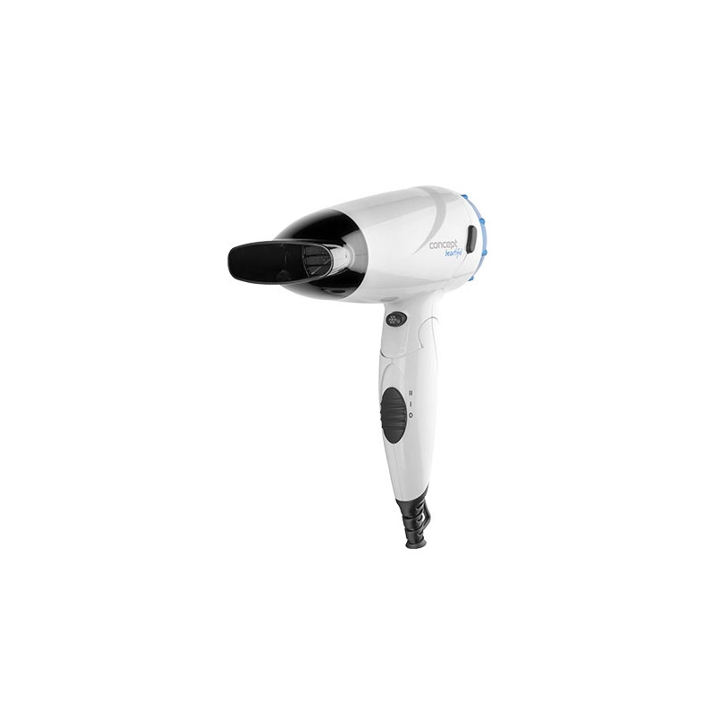
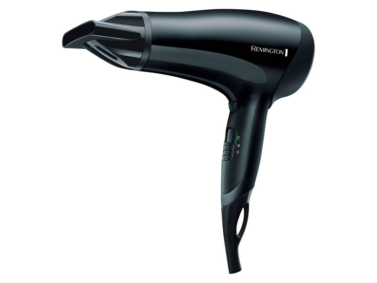
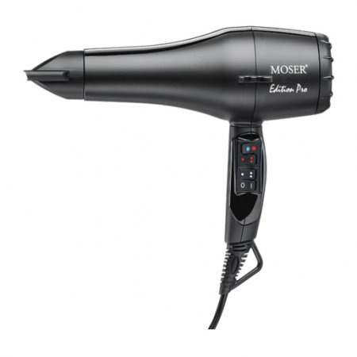

Concept - Suszarka Do Włosów 1500W VV5741
Koszt: 75.00zł Brutto
Opis:
Idealna w podróży i na basen (składany uchwyt, kompaktowy rozmiar)
Wskaźnik temperatury
2 stopnie temperatury
2 poziomy mocy
Funkcja Cool shock
Oczko do zawieszenia
Koncentrator
Długość przewodu: 1,58 m
Moc: 1500 W
VV5741 biel + niebieski + czerń
|

REMINGTON Suszarka do włosów z jonizacją Power Dry VoD3010, 2000 W
Koszt: 79.90zł Brutto
Opis:
suszarka do włosów z jonizacją REMINGTON Power Dry VoD3010 to wydajne urządzenie do pielęgnacji włosów
pierścień cermiczny z technologią jonizacji zmniejsza statyczne naładowanie włosów i zapewnia równomierne rozłożenie ciepła
funkcja eco - użytkowanie suszarki na średnim poziomie grzania oszczędza energię
3 poziomy grzania
2 oddzielne poziomy dmuchawy
poziom chłodnego nawiewu
dysza do stylizacji
zdejmowana i łatwa w czyszczeniu kratka wlotu powietrza
uchwyt do zawieszenia
|

Moser Edition Pro, suszarka do włosów, 2100W
Koszt: 331.49zł Brutto
Opis:
mocny silnik AC
2 szybkości
3 stopnie temperatury
kabel długości 2,8m
Zimny nawiew
koncentrator
elegancki, czarny kolor
ergonomiczna
oczko do zawieszenia
Waga 575g
|